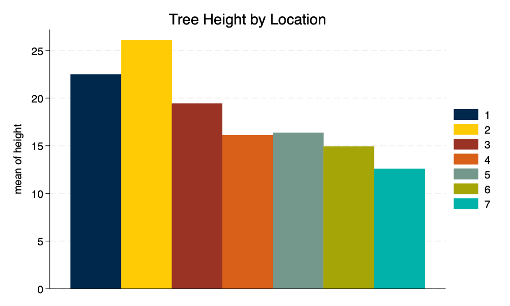

Data Visualization With Stata
Andy Grogan-Kaylor
Andy Grogan-Kaylor
5 Sep 2021
Introduction
What are Variables?
Variable Types
A Data Visualization Strategy
Data Source
Variables
Graphs
One Continuous Thing At A Time
. histogram height, title("Tree Height")
(bin=30, start=1.5, width=1.4)
. graph export myhistogram.png, width(1000) replace
file /Users/agrogan/Desktop/GitHub/Stata/data-visualization-with-Stata/myhistogram.png saved
as PNG format
Histogram Of Tree Height
One Categorical Thing At A Time
. graph bar, over(location) title("Tree Location")
. graph export mybargraph.png, width(1000) replace
file /Users/agrogan/Desktop/GitHub/Stata/data-visualization-with-Stata/mybargraph.png saved
as PNG format

Bar Graph Of Tree Location
Continuous by Continuous
. twoway scatter height age_base, title("Tree Height by Age")
. graph export myscatter.png, width(1000) replace
file /Users/agrogan/Desktop/GitHub/Stata/data-visualization-with-Stata/myscatter.png saved
as PNG format
Scatterplot Of Tree Height By Age
Categorical by Categorical
. graph bar, over(site) over(location) title("Tree Site Growth Quality by Location")
. graph export mybargraph2.png, width(1000) replace
file /Users/agrogan/Desktop/GitHub/Stata/data-visualization-with-Stata/mybargraph2.png saved
as PNG format

Bar Graph Of Tree Site By Location
Continuous by Categorical
. graph bar height, over(location) title("Tree Height by Location")
. graph export mybargraph3.png, width(1000) replace
file /Users/agrogan/Desktop/GitHub/Stata/data-visualization-with-Stata/mybargraph3.png saved
as PNG format

Bar Graph Of Mean Tree Height By Location
Schemes
Continuous by Continuous
. twoway scatter height age_base, title("Tree Height by Age") scheme(michigan)
. graph export myscatterM.png, width(1000) replace
file /Users/agrogan/Desktop/GitHub/Stata/data-visualization-with-Stata/myscatterM.png saved
as PNG format

Scatterplot Of Tree Height By Age With Michigan Graph Scheme
. twoway scatter height age_base, title("Tree Height by Age") scheme(lean2) msymbol(o)
. graph export myscatterL.png, width(1000) replace
file /Users/agrogan/Desktop/GitHub/Stata/data-visualization-with-Stata/myscatterL.png saved
as PNG format

Scatterplot Of Tree Height By Age With lean2 Graph Scheme
. twoway scatter height age_base, title("Tree Height by Age") scheme(s1color)
. graph export myscatterS.png, width(1000) replace
file /Users/agrogan/Desktop/GitHub/Stata/data-visualization-with-Stata/myscatterS.png saved
as PNG format

Scatterplot Of Tree Height By Age With s1color Graph Scheme
. twoway scatter height age_base, title("Tree Height by Age") scheme(burd) msymbol(o) graphreg
> ion(lcolor(none))
. graph export myscatterB.png, width(1000) replace
file /Users/agrogan/Desktop/GitHub/Stata/data-visualization-with-Stata/myscatterB.png saved
as PNG format

Scatterplot Of Tree Height By Age With burd Graph Scheme
Continuous by Categorical
Note that in the graph below, I have used the asyvars option to give different colors to the different bars.
. graph bar height, over(location) asyvars title("Tree Height by Location") scheme(michigan)
. graph export mybarM.png, width(1000) replace
file /Users/agrogan/Desktop/GitHub/Stata/data-visualization-with-Stata/mybarM.png saved as
PNG format

Bar Graph Of Mean Tree Height By Location With Michigan Graph Scheme
. graph bar height, over(location) asyvars title("Tree Height by Location") scheme(lean2)
. graph export mybarL.png, width(1000) replace
file /Users/agrogan/Desktop/GitHub/Stata/data-visualization-with-Stata/mybarL.png saved as
PNG format

Bar Graph Of Mean Tree Height By Location With lean2 Graph Scheme
. graph bar height, over(location) asyvars title("Tree Height by Location") scheme(s1color)
. graph export mybarS.png, width(1000) replace
file /Users/agrogan/Desktop/GitHub/Stata/data-visualization-with-Stata/mybarS.png saved as
PNG format

Bar Graph Of Mean Tree Height By Location With s1color Graph Scheme
. graph bar height, over(location) asyvars title("Tree Height by Location") scheme(burd) graph
> region(lcolor(none))
. graph export mybarB.png, width(1000) replace
file /Users/agrogan/Desktop/GitHub/Stata/data-visualization-with-Stata/mybarB.png saved as
PNG format

Bar Graph Of Mean Tree Height By Location With burd Graph Scheme